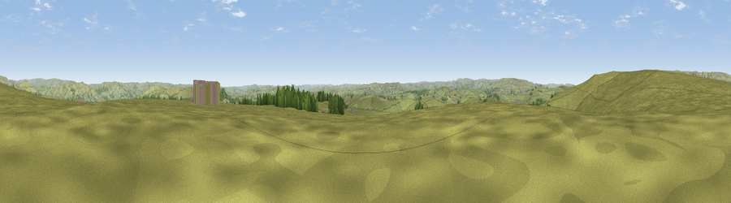

Viewpoint near Little Hucklow
#22065 in England · top 38% of its area beats it · near Little HucklowThe view, rendered

A 360° render of this exact spot computed from the terrain model, tree cover and land cover — summer colours, afternoon light, calibrated against photographs of famous viewpoints. Real trees, hedges and buildings will differ in detail.
The panorama
Grey silhouette: terrain skyline in each direction (720 bearings, Earth curvature and refraction included). Dashed green: skyline with trees (+15 m) and buildings (+8 m) as obstacles. Blue strip: how far the ground is visible on each bearing.
Where the view opens
Wedge length = distance to the farthest visible ground on that bearing (vegetation-aware). Rings at 10, 25 and 50 km.
What fills the view
93% grassland · 6% woodland ·
Angular shares of the visible panorama (visual magnitude), not map area. Landscape diversity 0.12 (0–1 Shannon).
Key numbers
More beautiful places nearby
The staircase of upgrades: each row has a higher view potential than everything closer. Driving times are estimates from straight-line distance, calibrated against real road routing — check an actual route before setting out.
| Place | Direction | Drive | Score |
|---|---|---|---|
| Viewpoint near Little Hucklow | SSE · 2 km | ~5 min | 53.4 |
| Viewpoint near Great Hucklow | ESE · 4 km | ~9 min | 55.8 |
| Durham Edge | E · 4 km | ~9 min | 57.2 |
| Mam Tor | NNW · 4 km | ~10 min | 68.5 |
| Lord's Seat | NW · 5 km | ~11 min | 73.1 |
| Viewpoint near Thornhill | NNE · 11 km | ~21 min | 74.1 |
| Harrop Edge | NW · 23 km | ~38 min | 74.6 |
| Wild Bank | NW · 24 km | ~39 min | 76.2 |
53.31338, -1.79096 · source: screening · position refined by local search. Computed location — check access rights before visiting.